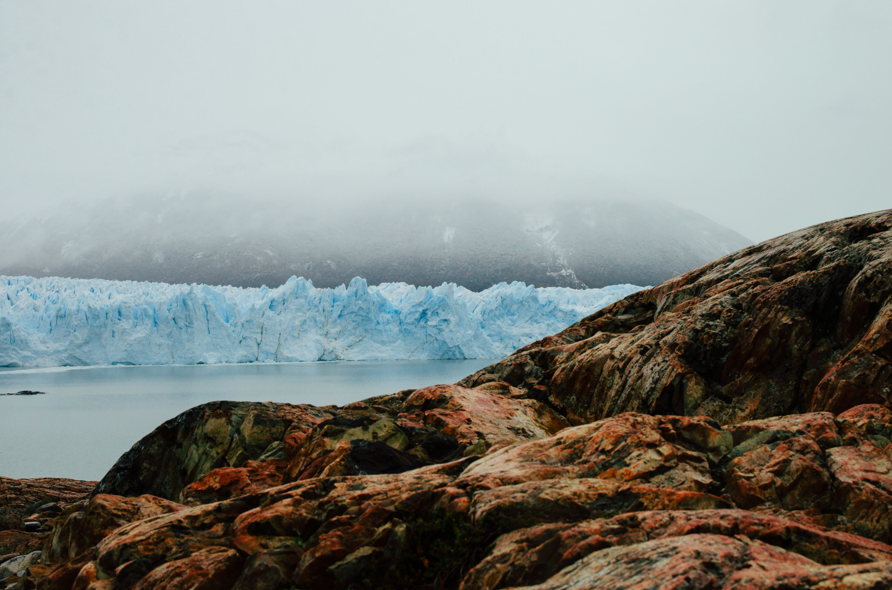

The Wall of Ice

The Perito Moreno Glacier stands as one of the coolest natural landscapes found deep within Argentine Patagonia. Unlike most global ice fields that are currently retreating, this formation remains stable and occasionally advances forward across the water. According to scientific monitoring updates published by the International Atomic Energy Agency scientific teams, its massiveness makes it a crucial freshwater reserve.